方案 C 规格稿scheme_c_sprout.png · 手机 2
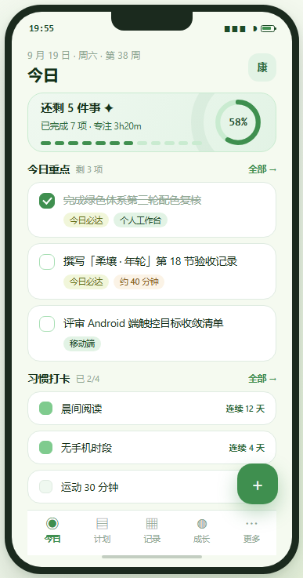
比对基准 design_preview/green_schemes/scheme_c_sprout.html（方案 C 源稿，作为规格书）； 比对对象是应用**真实渲染**（Flutter golden，非效果图）。左侧为源稿，右侧为当前实现。

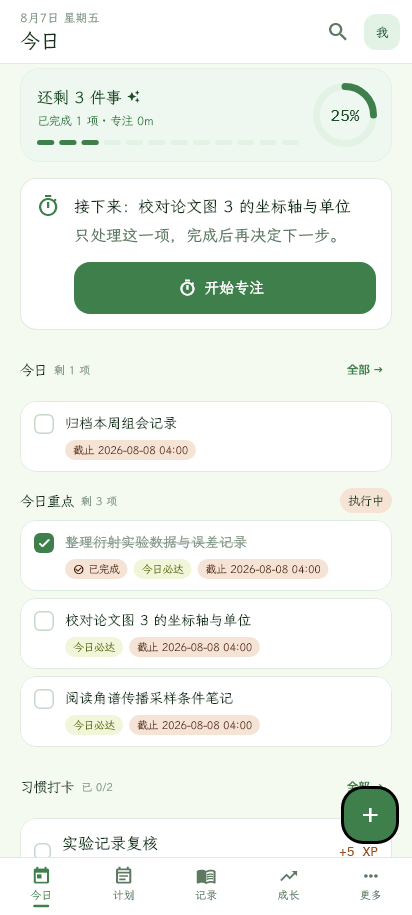
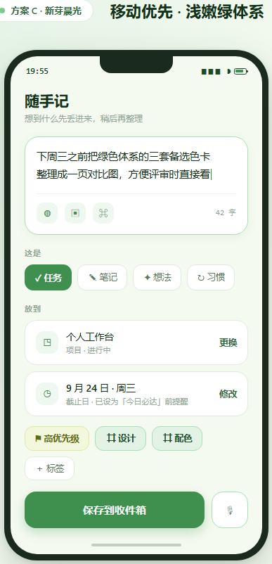
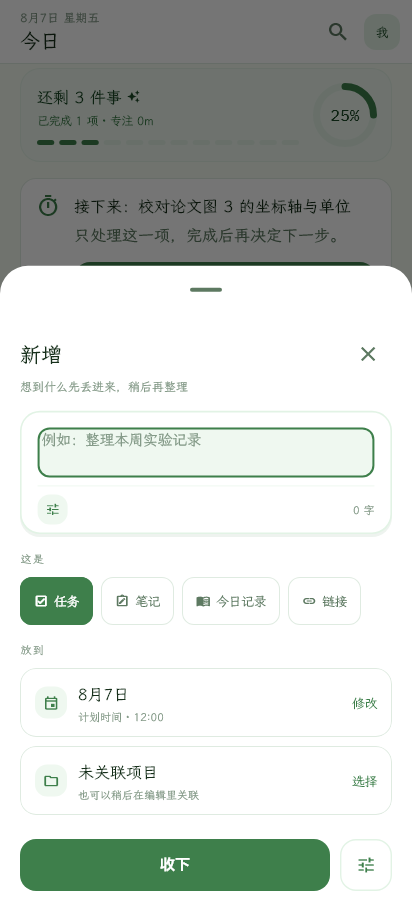
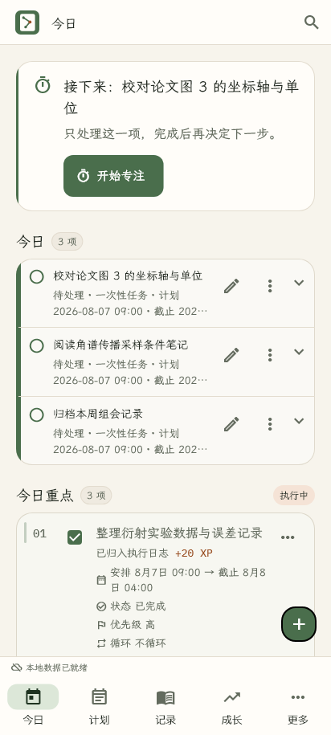
| # | 元素 | 方案 C 规格 | 此前状态 | 本轮结果 |
|---|---|---|---|---|
| 01 | 移动页头 | 日期小字 11.5px + 「今日」20px w600 + 36×36 头像 | 3px 主色竖条 + 24px 大标题 + ⓘ 图标 + 品牌块 | 已对齐 |
| 02 | 概览 Hero 卡 | 浅绿实色 + 1px 边框 + 12 段进度 + 64px 环形 + 中心 % | 完全不存在 | 新建 |
| 03 | 分段进度条 | 12 段 · 高 5 · 间距 5 · 圆角 3 | 无 | 新建 |
| 04 | 环形进度 | 直径 64 · 环宽 7 · 中心等宽百分比 | 无 | 新建 |
| 05 | 任务卡划分 | 一项一张独立白卡（圆角 16 · 1px 描边 · 卡距 7） | 一张面板装多行 + 行间 Divider | 已对齐 |
| 06 | 卡内左侧装饰 | 无 | 每行 3px 状态色竖条 | 移除 |
| 07 | 任务复选框 | 20×20 · 圆角 7 方框 · 选中主色实心 + 白勾 | 圆形状态图标 | 已对齐 |
| 08 | 元信息 | pill 标签行（主色 / 嫩黄绿 / 陶土 三族） | 一行拼接文本 | 已对齐 |
| 09 | 卡面行内操作 | 无（整卡可点展开） | ✏️ + ⋮ + ⌄ 三枚图标 | 手机端移除 |
| 10 | 分区标题 | 13.5px w600 + 11px faint 计数 + 「全部 →」 | 22px 大标题 + 计数 chip | 已对齐 |
| 11 | 习惯打卡 | 顶层分区 · 行卡 · 17×17 方点 · 「连续 N 天」 | 折叠在「今日详情」内 · Checkbox | 已对齐 |
| 12 | 承诺卡（今日重点） | 与任务卡同一种卡 | TaskRow：左索引竖条 + 内联五行事实 + ⋮ | 改为同形 |
| 13 | 移动底栏 | 58 高 · 白底 · 1px 顶线 · 16×2.5 短指示条 | NavigationBar 72 高 · 主色胶囊 indicator | 自制替换 |
| 14 | 同步状态条 | 源稿 pfoot 只有底栏一条 | 常驻 26px「本地数据已就绪」 | 改为按需出现 |
| 15 | 快捷捕获 FAB | 52×52 · 圆角 19 | 40×40 · 圆角 16 | 已对齐 |
| 16 | 同屏重复 | 每个任务只出现一次 | 「今日」与「今日重点」重复列同一任务 | 移动端去重 |
| 17 | 快捷捕获面板 | 输入卡 + 「这是」chip + 「放到」行卡 + 52px 主按钮 | 控件纵列 + Dropdown + 右对齐双按钮 | 重做 |
| 18 | 按钮字体族 | — | 「全部 →」渲染成豆腐块（基线在拍错误的照片） | 修掉 |
| # | 元素 | 偏离 | 理由 |
|---|---|---|---|
| A | 概览卡底色 | 渐变 → 实色 | 源稿用 linear-gradient；现行规范明文禁止装饰渐变与玻璃拟态。改用实色 + 1px 边框，保留「浅绿托底、与白卡区分」的意图。 |
| B | 桌面展开指示 | 保留 ⌄ | 方案 C 只描述手机。桌面卡宽约为手机 1.8 倍，去掉后右侧大片空白且丢失「可展开」线索。**仅 width ≥ 768 出现。** |
| C | 页头搜索图标 | 保留 | ui_coverage_regression_test 守卫「移动端今日可达全局搜索」，属功能要求，不能为对齐效果图而删。 |
| D | 捕获页文案 | 新增 / 收下 | 源稿是「随手记 / 保存到收件箱」。保留产品内既有文案体系。 |
| E | 承诺卡动作名 | 专注此项 | 「开始专注」是「下一步行动」面板的主按钮文案。同名会让「今日只暴露一个行动」的守卫失效——测试已实测拦下。 |
| F | 今日重点右侧 | 状态 + 调整重点 | 源稿此处是「全部 →」。实际承载的是当日流程状态与「调整重点」入口（有测试守卫），语义不同故保留。 |
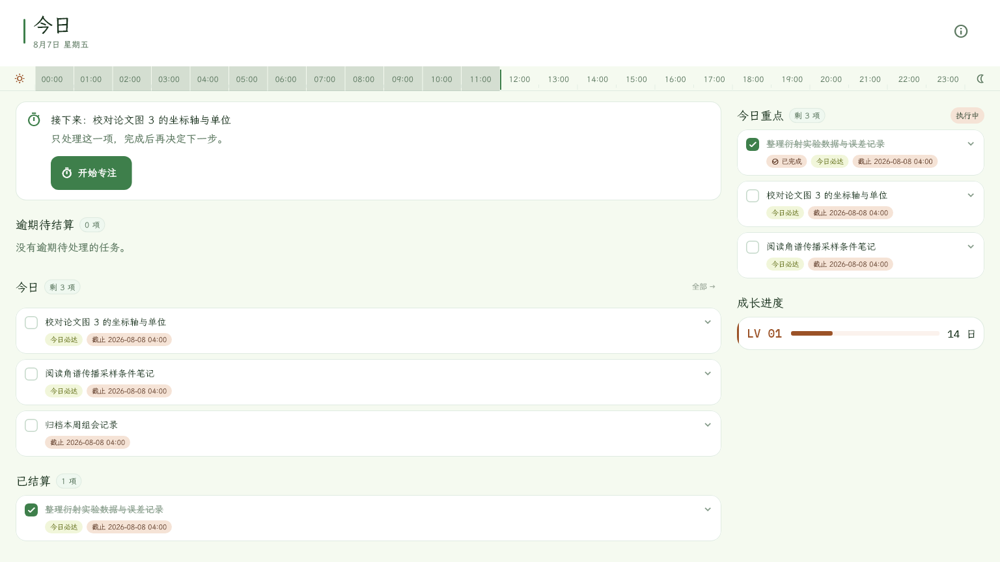
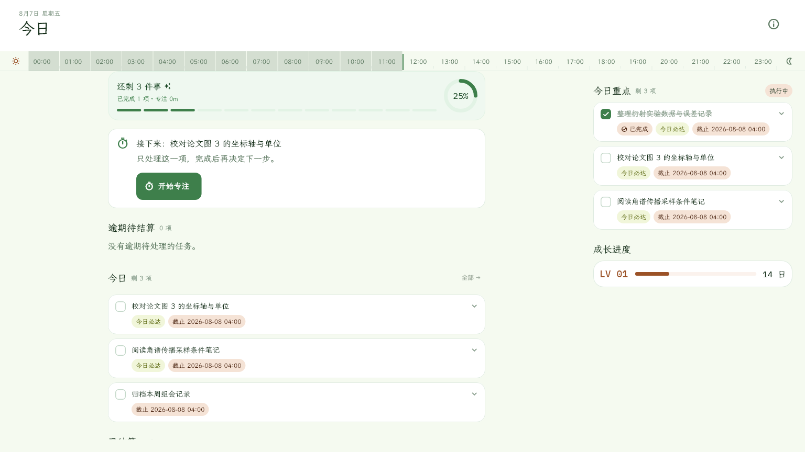
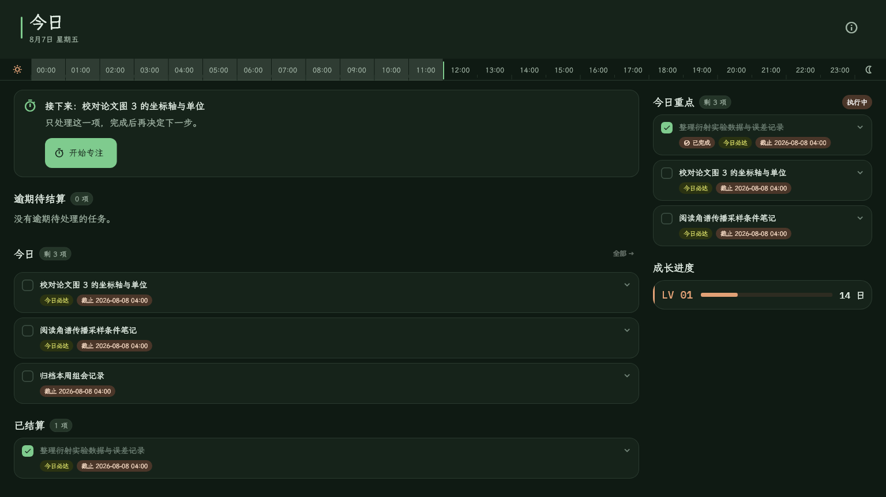
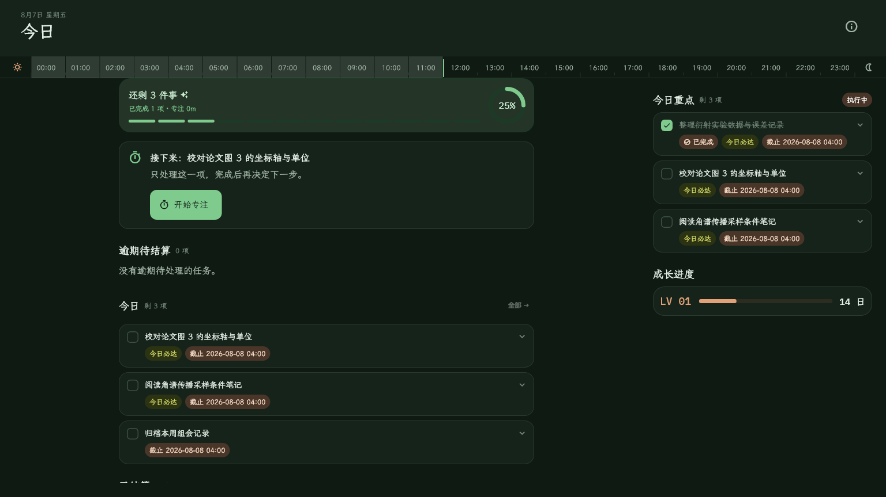
§9 给 PageHeader 定的规格里并没有那条竖条——层级本就由字号与留白承担， 它只是装饰，还把左内边距挤歪了 15px。删掉后补上 kicker 参数承载引题， 桌面页头于是与移动端是同一段信息、同一种排布。
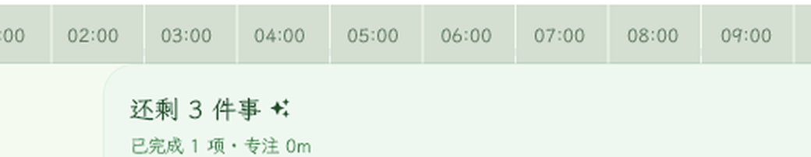
它是方案 C 的视觉锚点。缺了它，同一天在两个端上是两种观感——而它本来就不是「移动端专属组件」。 桌面保留两栏架构（右栏 380px：今日重点 + 成长进度）是 §8.1 的明文规定，方案 C 只画了单列手机， 并不构成对两栏的否证；把桌面拍扁成单列是过度适配，不是「保持一致」。
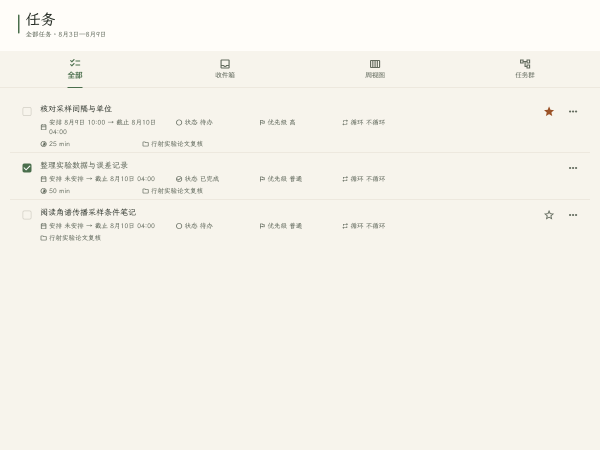
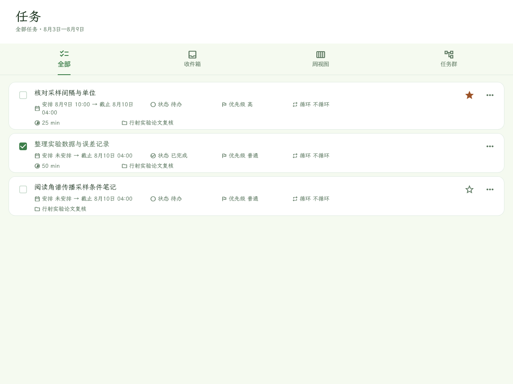
左图取自 HEAD 基线，配色仍是上一代——只看列表结构即可：改前是「一张 Card 装多行 + 行间 Divider」（计划页）或「裸行 + Divider(height:1)」（项目页）， 改后统一为一行一卡、卡间 8px 留白。§8.2 与 §1 都要求「分组之间留白，无分隔线」； 收件箱页与项目看板本就是这个形态，本轮补齐后全应用只剩一种列表语言。 页头下方那些 if (showHeader) const Divider() 也一并删除（§9：页头无下边框）。
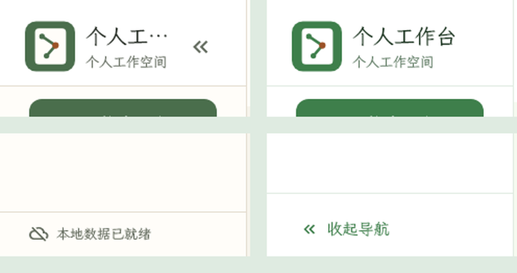
① 品牌标题右侧原挂着一个「收起导航」图标按钮，占走 94px，把 个人工作台
挤成 个人工…；按钮下移到页脚后，标题拿回完整的 192px，
且与收起态右下角的「展开导航」形成对称。
② 同步状态行改为仅在云端同步真正配置过时出现——未配置时它恒显「本地数据已就绪」，
每屏占一行、零信息量，而 cloud_off 图标已经表达了「本地模式」。
移动端已按此判据收敛（§20.4），桌面此处对齐，两端页脚因此同构。
| # | 模块 / 功能点 | 改前 | 改后 |
|---|---|---|---|
| 1 | 页头 PageHeader | 3px 主色竖条 + 12px 间距 | 删除竖条，新增 kicker 承载引题 |
| 2 | 今日页头日期位置 | 日期在标题下方（subtitle） | 日期上移为引题（kicker） |
| 3 | 分区标题计数 | subtle 底 + 1px 边框的圆角 chip | 淡色纯文本（inkFaint，桌面 12 / 移动 11） |
| 4 | 桌面侧栏品牌块 | 标题被「收起导航」按钮挤掉 94px → 个人工… | 按钮下移页脚，标题拿回 192px |
| 5 | 桌面侧栏页脚 | 同步状态行恒显 | if (cloudConfigured) 才出现 |
| 6 | 桌面今日页内容列 | 内容铺满（1536 视口下 65% 卡面是空白） | Center + 限宽 720（contentMax） |
| 7 | 桌面今日页编排 | 概览卡只在移动端 | 桌面左列同样置顶 |
| 8 | 标签 pill 密度 | dense: true 恒真（8 处） | dense: compact |
| 9 | 任务卡 / 习惯卡交互反馈 | 无 hover / focus 态 | hover primary α.06 · focus α.1 |
| 10 | 「今日任务」未开始态 | LogSurface 面板 + ListTile + Divider | 一项一卡 + NumericText 序号 |
| 11 | 卡片左侧状态色竖条 | LogSurface(accent:) 的左侧 3px 色条 | 移除（§20.4 明文禁） |
| 12 | 任务列表语言（计划 / 项目） | 裸行 + Divider 或 一卡多行 + Divider | 一行一卡 + 卡间 8px 留白 |
| 13 | 页头下分隔线（计划/行为/日历/收件箱/项目） | if (showHeader) const Divider() | 删除（§9：页头无下边框） |
| 14 | 概览卡点缀字形 | ✦（U+2726）→ 豆腐块 | Icon(Icons.auto_awesome) |
| 项 | 桌面 | 移动端 | 理由 |
|---|---|---|---|
| 信息架构 | 两栏：内容列 + 右 380px 固定栏 | 单列连续滚动 | §8.1 明文规定；方案 C 只是没画桌面 |
| 内容列宽度 | 限宽 720 并居中 | 满宽（页边距 20） | 桌面单行过长会丢失扫读锚点；contentMax 取值推导见 §8 |
| 任务卡展开指示 | 保留右侧 ⌄ | 无 | 桌面卡宽约为手机 1.8 倍，去掉后右侧大片留白且丢失「可展开」线索 |
| 侧栏顶部标记 | SealLogo 品牌块 | 36×36 身份头像 → 设置 | 品牌块同时是启动页与「更多」面板的标记，三处同源；桌面再挂头像会出现两个身份入口 |
| 分区标题字号 | titleLarge | 13.5px / w600 | 桌面一屏信息量更大，需要更强的分区对比度维持层级 |